I interviewed students, prototyped interfaces, and designed the attention dashboard.
Poster Video
Brief
Students described losing focus to phones and classroom distractions.
Read more: brief
BrainBud is a mobile app that empowers students who have ADHD and other focus-sustaining issues to stay engaged in class and learn better. This project was completed as part of Cornell’s INFO 3450 - HCI Design.
The Challenge
If you check how many times you pick up your phone every day, you will probably be surprised, as the number may be much higher than you thought. For college students, it almost feels like an irresistible impulse to check their phone every few minutes. This behavior is even more prevalent for students who have ADHD. This behavior is slowly taking away their ability to focus for a longer period of time and think deeply.
Research
Interviews with students with ADHD pointed to accountability and digital distractions as design priorities.
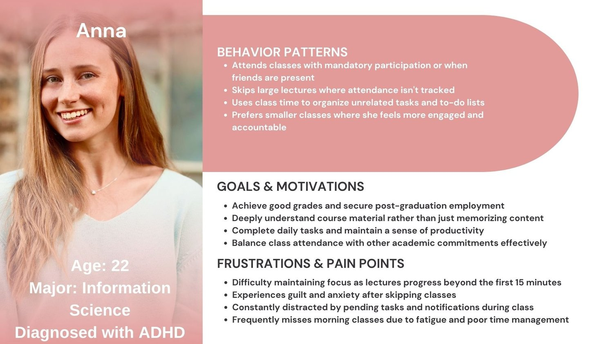
Read more: research
Based on contextual interviews with students with ADHD, we identified that class attendance is primarily driven by grading policies and social accountability, while in-class focus is frequently disrupted by digital and environmental distractions. These insights directly shaped our persona and informed BrainBud's design as a focus-support tool.
Prototyping
Storyboards, paper tests, and Figma prototypes helped the team refine the flow.
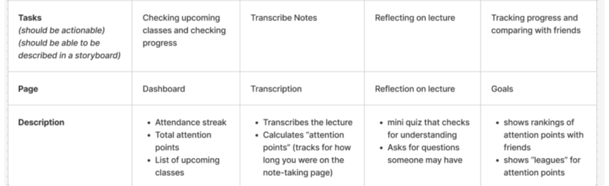
Read more: prototyping
Carrying the insight obtained from user research, we started brainstorming for possible solutions. Each member brainstormed ideas and brought them to the group meeting. We grouped solutions by theme—such as rewards, transcription, and accountability—then voted collectively on the most promising directions. We prioritized features that addressed gaps in existing solutions, ultimately converging on a mobile app that combines accomplishment tracking, lecture transcription, comprehension checks, and long-term progress visualization to support sustained focus and motivation.
To further contextualize how this app will function in a specific scenario, we created storyboards for each task the app performs. The example shown below is the storyboard I created to illustrate how users would use BrainBud to transcribe lectures, tracking her attention in class, and getting organized notes after class.
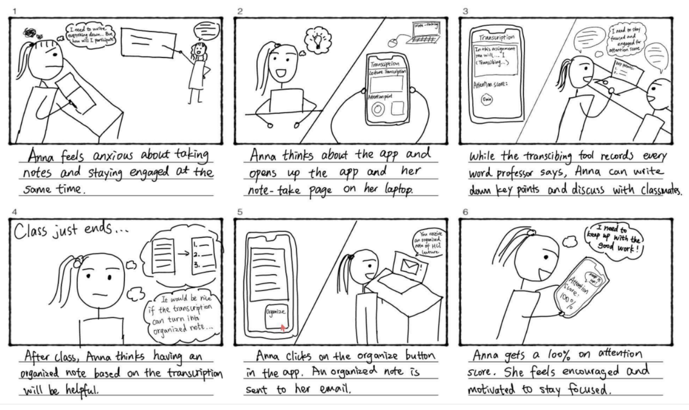
Low-Fi Prototype
Knowing the picture of how users will interact with the app, we then started sketching out low-fidelity prototypes for all the functionality.
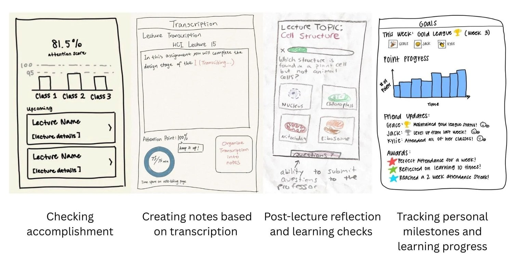
Paper Prototyping
Usability Test 1
Prior to developing mid-fidelity Figma prototypes, we created paper prototypes to visualize user flows in a tangible and flexible format. The video is me interacting with the prototype, demonstrating the happy path. Then, I recruited participants and used this prototype to perform the first round of usability test.
We learned that…
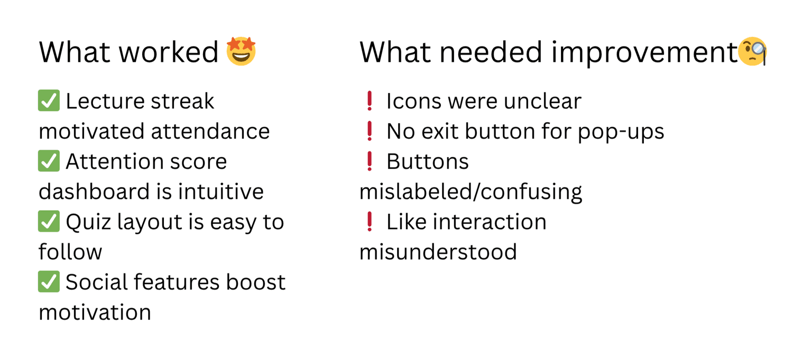
Med-Fi Prototype
Building on user feedback, we developed med-fi prototypes using Figma. The app was beginning to take shape as we connected frames and visualizing interactions.
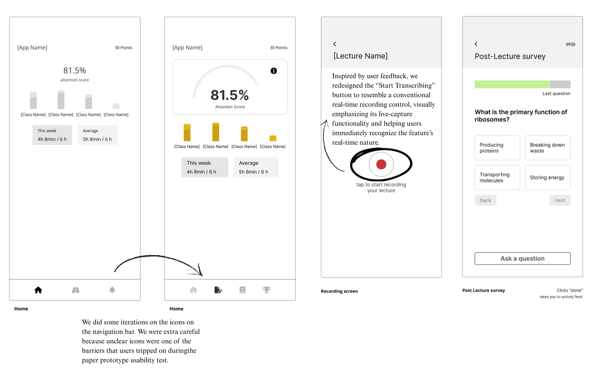
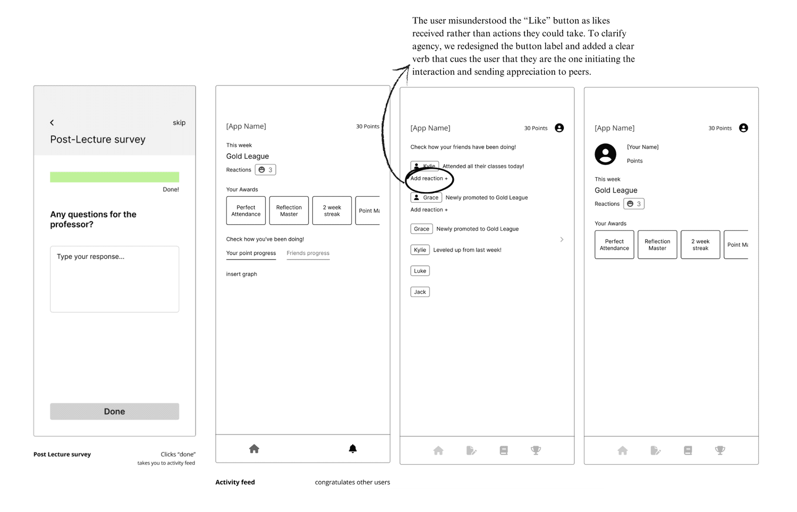
Hi-Fi Prototype
Usability Test 2
Preparing for the second round of user testing, we developed our first hi-fi prototype to showcase to participants a more polished user experience. Insights we gained prompted us to change details that add clarity and enable error recovery. The example demonstrates some changes we made.
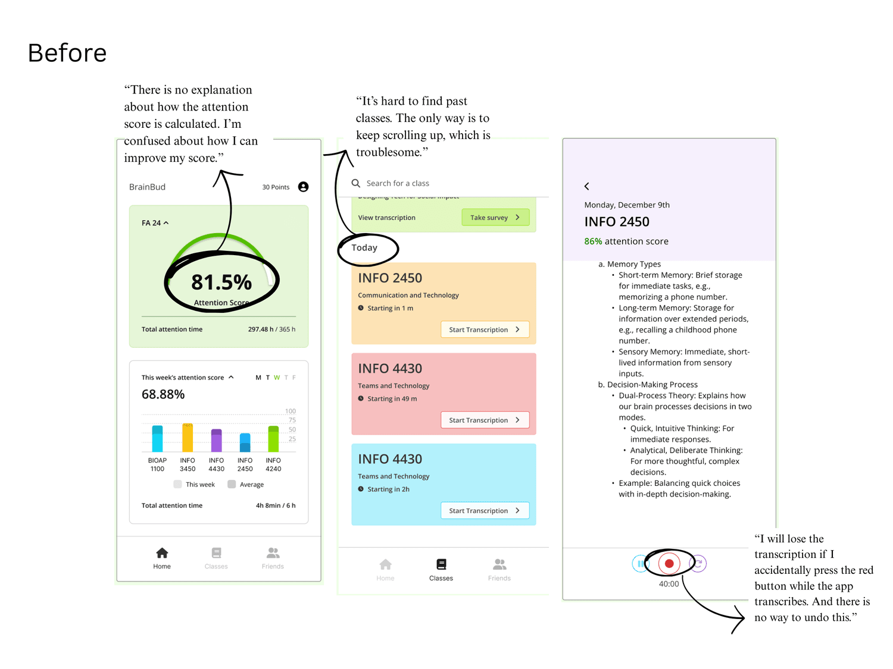
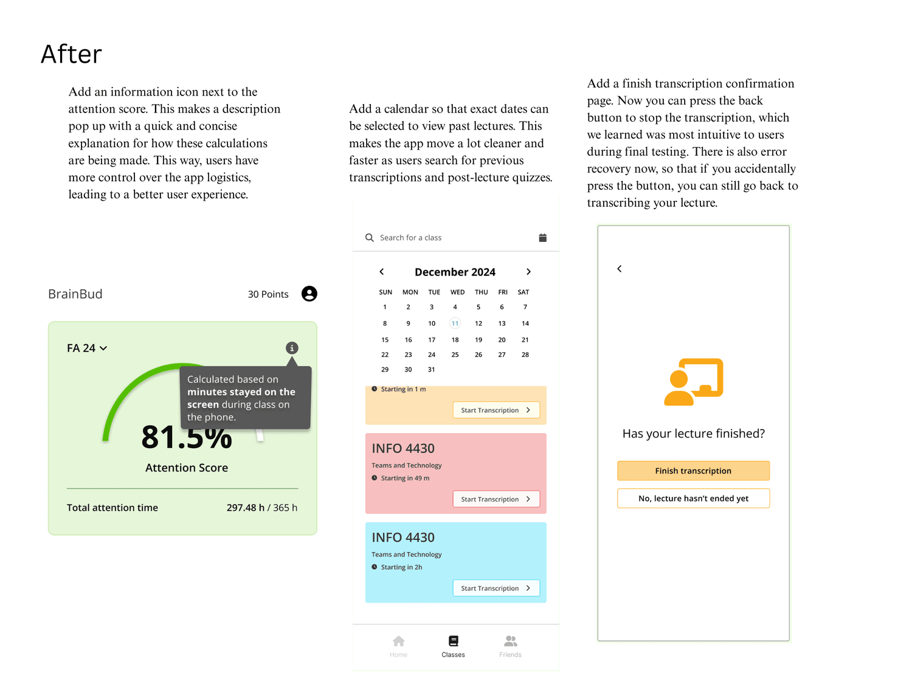
Solution
A dashboard, lecture transcription, post-class quizzes, and peer achievements support students before, during, and after class.
The final version delivers a clearer, more intuitive flow that highlights social motivation and transparency. It enables users to effortlessly track their attention progress, strengthen their understanding of course materials, celebrate peers’ achievements, and stay engaged through supportive interactions. Each feature was thoughtfully refined to balance practical functionality with emotional resonance, resulting in a smoother and more rewarding experience for students.
Feature 1: Attention Tracking Dashboard
Students can see their total attention score for the semester as well as their daily attention score for all their classes.
Feature 2: Real-time Lecture Transcription + Attendance Tracking
When the lecture begins, students can start transcribing with one click. The app tracks students’ attention by logging the time they stay on the note-taking page.
Feature 3: Post-Lecture Quiz
After the lecture, the app creates quiz questions based on the transcribed notes. Students can directly send questions to teaching staff while completing the quiz.
Feature 4: Achievement Tracking and Interaction with Friends
Students can check their league, awards, and attention score trend in their profile. They can also see their friends' recent achievements and react to them.
Reflection
Testing with students helped the team see where its own assumptions fell short.
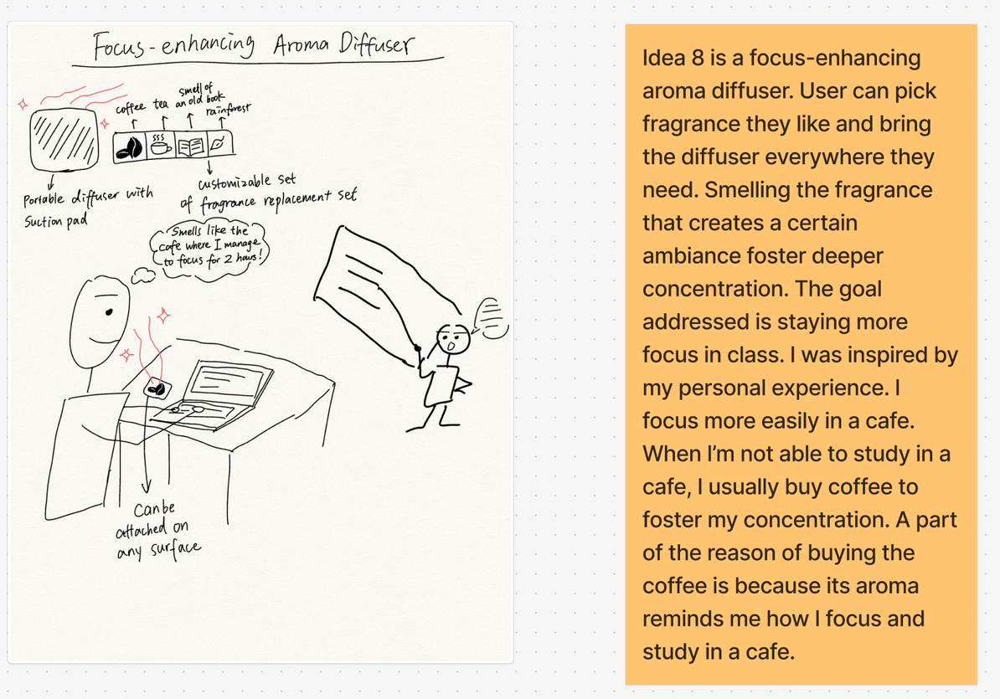
Read more: reflection
BrainBud represents the first app I designed from scratch and my inaugural experience navigating the complete HCI design cycle—from initial user research and ideation to prototyping and iterative testing.
This process reinforced the value of expansive, judgment-free brainstorming; by generating over 60 ideas as a team—including unconventional concepts—we uncovered unexpected inspiration that ultimately enriched our final design.
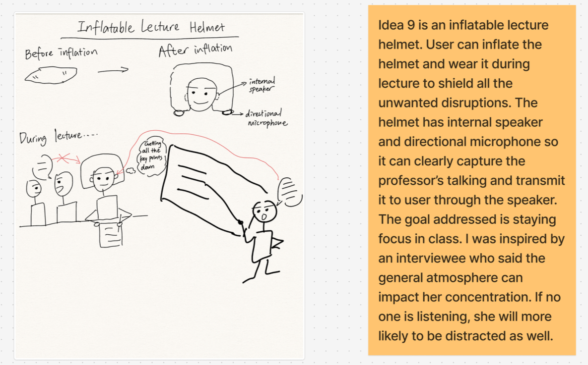
Equally important was the need to design with empathy: by continually testing with students with ADHD—not ourselves—we learned to prioritize their lived experiences, leading to a more inclusive and effective solution. This project solidified my belief in human-centered design as an iterative, user-informed practice.
Some “crazy” ideas generated in brainstorming😝